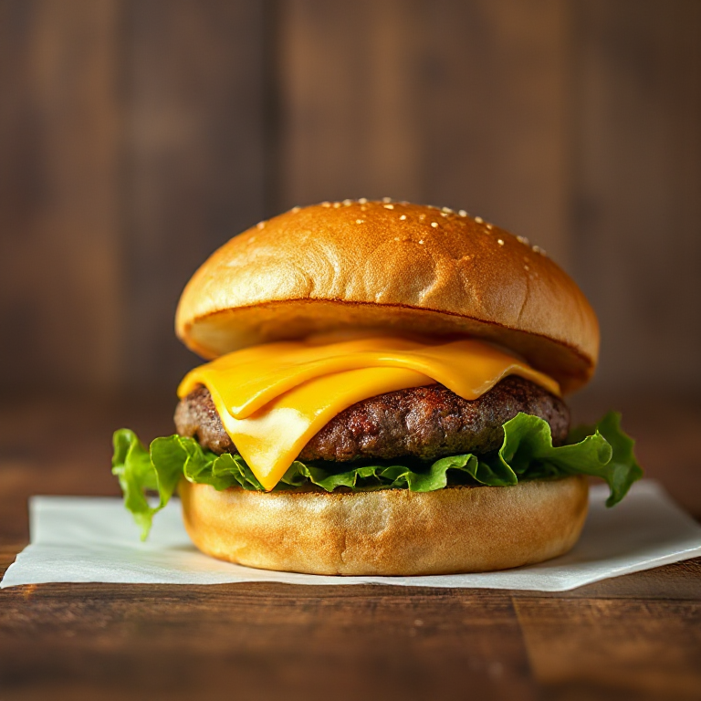

This photo was generated with FLUX.1-schnell locally using DiffusionBee
Ingredients:
For the Burger Patties:
1 lb (450g) ground beef (80/20 lean-to-fat ratio)
1 small onion, finely chopped
3 cloves garlic, minced
2 tbsp Worcestershire sauce
1 large egg
1/2 cup breadcrumbs
2 tsp kosher salt
1 tsp black pepper
2 tbsp canola oil or vegetable oil
For the Burger Buns:
4 cups (500g) all-purpose flour, plus more for dusting
2 tsp instant yeast
1/2 cup (100g) granulated sugar
1 tsp kosher salt
3 large eggs
1/2 cup (120ml) whole milk
8 tbsp (113g) unsalted butter, melted and cooled
Sesame seeds (optional)
For the Special Sauce:
1/2 cup mayonnaise
2 tbsp ketchup
1 tbsp yellow mustard
1 tbsp dill pickle relish
1 tbsp apple cider vinegar
1 tsp Worcestershire sauce
1/2 tsp smoked paprika
1/4 tsp garlic powder
For Assembly:
8 slices American cheese
4 hamburger buns (homemade or store-bought)
Lettuce leaves (romaine, iceberg, or butter lettuce)
Sliced tomato
Sliced red onion
Dill pickle chips
Cooked bacon strips (optional)
Instructions:
For the Burger Patties:
In a large bowl, combine ground beef, chopped onion, minced garlic, Worcestershire sauce, egg, breadcrumbs, salt, and pepper. Mix gently using your hands or a fork until just combined.
Divide the mixture into 4 equal portions (about 6 oz each) and shape them into patties. Use your thumb to create a slight indentation in the center of each patty to help prevent them from puffing up and becoming round while cooking.
Cover the patties with plastic wrap and refrigerate for at least 1 hour or up to overnight to let the flavors meld together.
For the Burger Buns:
In the bowl of a stand mixer fitted with the dough hook attachment, combine flour, yeast, sugar, salt, eggs, milk, and melted butter on low speed until the dough comes together.
Increase the speed to medium-low (setting 2-3 on your mixer) and knead for about 10 minutes, until the dough is smooth and elastic. If the dough is too sticky or loose, add more flour one tablespoon at a time; if it's too dry or crumbly, add more milk one tablespoon at a time.
Transfer the dough to a greased bowl, cover it with plastic wrap, and let it rise in a warm place for about 1 hour, until doubled in size.
Once risen, gently punch down the dough and divide it into eight equal pieces (about 2 oz each). Shape each piece into a ball by pinching the seam at the bottom and tucking it underneath.
Place the buns on a greased baking sheet lined with parchment paper, spacing them about 3 inches apart. Cover the buns loosely with plastic wrap and let them rise for another 45-60 minutes, until puffed up.
Preheat your oven to 375°F (190°C).
Lightly brush the tops of the buns with water and sprinkle with sesame seeds if desired.
Bake for about 15-20 minutes, until golden brown. Allow the buns to cool completely on a wire rack before slicing them horizontally.
For the Special Sauce:
In a small bowl, whisk together mayonnaise, ketchup, yellow mustard, pickle relish, apple cider vinegar, Worcestershire sauce, smoked paprika, and garlic powder until well combined.
Cover and refrigerate for at least 30 minutes to allow the flavors to meld together before using.
For Assembly:
Preheat your grill or grill pan over medium-high heat. Lightly oil the grates to prevent the burgers from sticking.
Remove the burger patties from the refrigerator and let them sit at room temperature for about 10-15 minutes to take off some of their chill.
Carefully place the patties on the grill or grill pan, indentation side up. Cook for about 4-5 minutes until nicely browned with grill marks, then flip them over. Cook for another 3-5 minutes for medium doneness (internal temperature should reach around 160°F/71°C). Be careful not to press down on the burgers while cooking; this will release their juices and dry them out.
In the last minute of cooking, place a slice of cheese on each burger patty to melt it slightly.
While the burgers are cooking, toast the buns if desired.
To assemble the burgers, spread some Special Sauce on both halves of the bun (inside and outside). Place a cooked burger patty on the bottom half of the bun, followed by lettuce leaves, sliced tomato, sliced red onion, dill pickle chips, and cooked bacon strips if using. Top with the remaining half of the bun.
Serve immediately and enjoy your delicious homemade burgers!
You can customize this recipe with different toppings, condiments, or even make your own patty variations like turkey burgers, veggie burgers, or stuffed burgers. Don't forget to adjust cooking times accordingly based on the thickness of your patties. Happy grilling!
Note: This recipe was generated with Mistral NeMo model locally using Ollama.